Today’spick
Your Name.Anime2016 · Film · 1 h 46 min
Plan to watch
Moods and a clear index lead the page. Today’s issue is a numbered path of six sections, each answering one question. The path pins as a compact index while you scroll, ticks off what you have read, and ends with “You’re caught up for today.” Every card is one tap to open plus one Plan key. Long-press opens a preview with Seen it and Not interested, which remove the title at once and teach Taste.
Built only from Home grammar (canvas #FFFEF8 / #F5F5F3, 24/−0.85 headings, 9/1.05 eyebrows, glance-card face, KuroKeyFace light keys, TastePlanKey, TastePlanToastView, 28 × 2 switch mark). Artwork comes from the prototype assets and their ArtworkMaterial values. No series appears twice in any frame (R2 applied to the mockup itself).
4106 Mood keys lead the page, under the switch. The cover story is shorter (2.6:1, facts in the foot). “Today’s issue” is now a numbered path of jump rows (↓ = scrolls to the section) with its question, count, and a 0-of-6 progress bar. Nothing is folded. The Airing-today glance moves to the Anime issue (frame 9). R1, R7, R8.

 Something shortFilms, ≤ 12 eps, one-shots
Something shortFilms, ≤ 12 eps, one-shots

 CozyWarm, low stakes
CozyWarm, low stakes

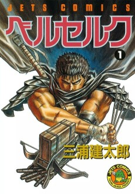
IntenseDark and gripping
 Like MonsterYour last 5 ★
Like MonsterYour last 5 ★
108111 Once the path card scrolls away, it pins as a compact index under the header. Read sections get ✓, the current one gets the 28 × 2 mark, and tapping a word jumps. Tapping “Discover” in the header scrolls to the top. “3 new since your last visit” and the corner word NEW come from an on-device content hash, per account. Every card in All carries ANIME or MANGA. A title already on your list keeps its status word here (“Watching · Ep 7”) because This season is not a personal section. R1, R2, R8.
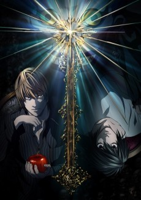
Death NoteAnime2006 · TV · 37 eps Steins;GateAnime2011 · TV
Steins;GateAnime2011 · TV Violet EvergardenAnime2018 · TV
Violet EvergardenAnime2018 · TVWhat’s airing right now, newest episode first.
 NewFrierenAnimeEp. 4 on Fri
NewFrierenAnimeEp. 4 on Fri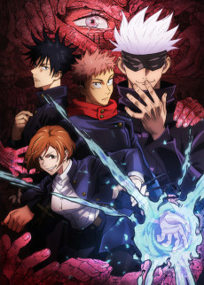
NewJujutsu KaisenAnimeEp. 9 on Thu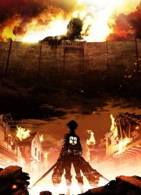
Attack on TitanAnimeFinal seasonWatching · Ep 7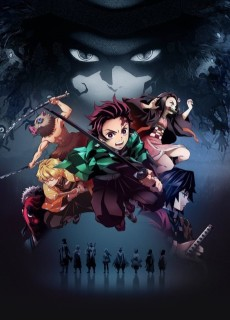
NewDemon SlayerAnimeEp. 2 todayWhich series should everyone see once?
23 iOS contextMenu(menuItems:preview:) on any Discover, See all or mood-journey card. The preview shows the artwork, facts, the synopsis, and why the title is here. Menu: Plan to watch (the same TastePlanKey action), Seen it, Not interested, Add to club…, Open. Tapping the preview opens the title as a journey (navigation contract). R3.
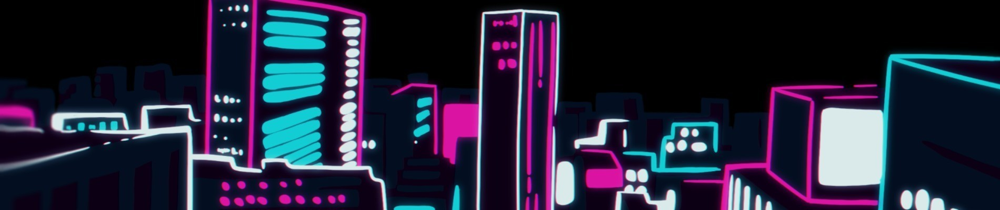
Steins;GateViolet EvergardenA bored student finds a notebook that kills anyone whose name he writes in it, and a detective starts closing in.
Here because: you finished Monster · 2 in your clubs31 Death Note collapses out of the row with a light haptic and the .kuroConfirmStamp. The next unseen title that is not a duplicate (ERASED) slides in on KuroMotion.settle, which is skipped under Reduce Motion. The signal is TasteStore.submitSignal(…, .pass). A local hidden-set keeps it hidden across launches until the server excludes it. Undo sends .retract and puts the title back in its old place. R4, R5, R2.
Series you haven’t seen yet. A new set each morning.
Steins;GateAnime2011 · TVViolet EvergardenAnime2018 · TV ERASEDAnime2016 · TV · 12 eps
ERASEDAnime2016 · TV · 12 epsSeen it variant: same removal, signal .known. The toast offers “Add as Completed”, which opens the tracking editor through routes.presentTrackingEditor pre-set to Completed. No status is ever written silently.
91 The progress hook counts list entries with status Completed (or Watching) against the curated list. Titles you own stay in place with their status word (the lead’s “mark, don’t hide” rule for essentials). One row has just been planned: dark face, “On your list”, a stamp ring, a haptic, and a toast with Undo. Section 04 below shows MANGA labels. R2, R3, R4.
Which series should everyone see once?
 Cowboy BebopAnime1998 · TV · 26 eps✓ Completed
Cowboy BebopAnime1998 · TV · 26 eps✓ Completed Fullmetal Alchemist: BrotherhoodAnime2009 · TV · 64 epsOn your list
Fullmetal Alchemist: BrotherhoodAnime2009 · TV · 64 epsOn your list Hunter x HunterAnime2011 · TV · 148 eps✓ Completed
Hunter x HunterAnime2011 · TV · 148 eps✓ Completed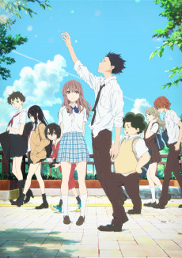
A Silent VoiceAnime2016 · FilmPlan to watch MonsterAnime2004 · TV · 74 eps✓ Completed
MonsterAnime2004 · TV · 74 eps✓ CompletedManga you haven’t opened, picked from what you read.
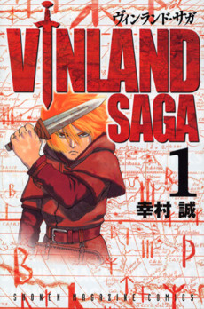
Vinland SagaManga2005 VagabondManga1998
VagabondManga1998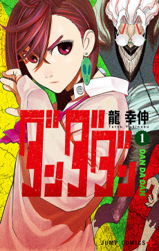
DandadanManga202176 Six sections and then an explicit end. This season and Classics are promoted out of the old fold. Top rated and Just added become sorts on See all (Top rated, Newest), so nothing is lost. The end has the six-segment bar filled and Browse and Search as link rows. The plain Trending filter words (“Under 13 episodes · 13 or more · Finished”) are shown on its See all page (frame 7), and This season’s words in frame 2. Then HomeFooter. R6, R7.
 Kaguya-sama: Love is WarAnime2019 · TV
Kaguya-sama: Love is WarAnime2019 · TV Bocchi the Rock!Anime2022 · TVCompleted
Bocchi the Rock!Anime2022 · TVCompleted Haikyu!!Anime2014 · TV
Haikyu!!Anime2014 · TV Chainsaw ManAnime2022 · TV
Chainsaw ManAnime2022 · TVOlder series still worth an evening.
 MushishiAnime2005 · TV · 26 epsPlan to watch
MushishiAnime2005 · TV · 26 epsPlan to watchYou read all 6 sections. A new issue arrives tomorrow morning.
56 A real page. Sort words (Popular · Newest · Top rated) use the switch rule, and the quick filters are plain capsules with a ✓ when selected. Changing a sort or filter keeps the page and only refines the list. Every row has one Plan key and the long-press preview. Rows page on scroll where the source pages (the Browse paging in DiscoveryStore), and otherwise the list just ends. Open pushes inside the journey (N9). Tools return here (N7). R3, R6, R8.
What everyone on Kuro is watching this week.
Kaguya-sama: Love is War2019 · TV · 12 eps · FinishedPlan to watchBocchi the Rock!2022 · TV · 12 eps · Finished✓ CompletedChainsaw Man2022 · TV · 12 eps · FinishedOn your listOne-Punch Man2015 · TV · 12 eps · FinishedPlan to watch46 A mood key opens a filtered journey. Its first line says what the mood means in plain words. The filters are pre-set and visible, so the user can loosen them. Other moods sit at the top so the user can switch without leaving. The source is existing data only: the Concierge vibe short_one_season, plus format and episode counts. Owned and passed titles are hidden here (personal). R1, R2, R6.
Done in a weekend: a film, a finished series under 13 episodes, or a one-shot.
ERASEDAnime2016 · TV · 12 eps · FinishedPlan to watchLook BackManga2021 · One-shot · 1 ch.Plan to read410 The same guided top. The moods are anime-scoped, Airing today keeps its glance, and the path lists the anime issue’s five sections (Because you finished Monster takes New to you’s slot when there is a recent 5 ★ finish). The personal mood reads “Like Monster” because Monster is the last title rated 5 ★ (taste profile, Because-you seed). With no rated title, it falls back to “Like the last thing you loved” and opens the Taste deck seed. Cards carry no ANIME label in a single-medium issue. R1, R7.
Something shortUnder 13 episodes
CozyWarm, low stakes
IntenseDark and gripping
Like MonsterYour last 5 ★
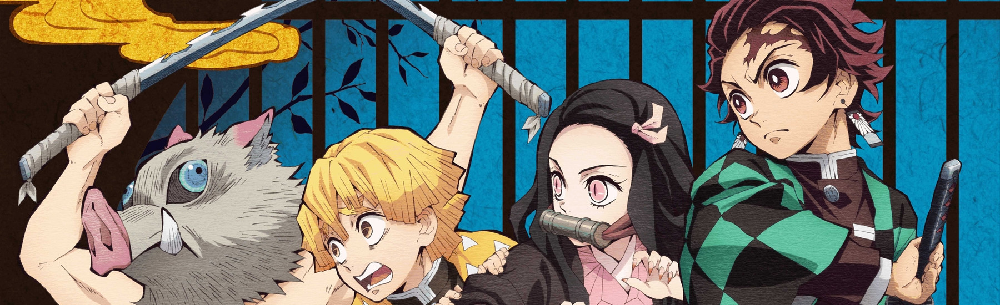
Today’spick49 Canvas #F5F5F3. The moods use reading words (“One-volume reads”, chapters not episodes). The cover story is the manga spread fallback with “Plan to read”. The manga issue has four sections: New to you, Essential manga (with its own “You’ve read 2 of 8”), Trending manga, Classics. Top rated and Just added live as sorts on See all. R1, R7.
 One-volume readsDone in an evening
One-volume readsDone in an evening
 CozyWarm, low stakes
IntenseDark and gripping
CozyWarm, low stakes
IntenseDark and gripping
 Like Vinland SagaYour last 5 ★
Like Vinland SagaYour last 5 ★
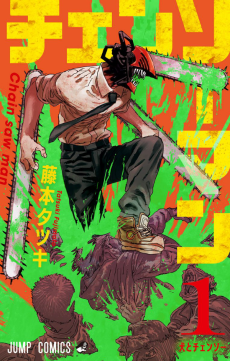
| Item | Guided answer | Frame |
|---|---|---|
| 1 Franchise dedupe + owned rule | One pass over the issue in curated order (DiscoverIssueSections): the first section to claim a franchise keeps it. The key is the relation root from get_media_ladder, or the series group (SeriesGrouping), with the title id as fallback. Anime and manga of the same franchise count as one on All. Owned: hidden in New to you / Because you / Manga new to you / mood journeys; marked with the status word in Essentials, This season, Trending, Classics. | 2, 4, 5, 6 |
| 2 Long-press preview | .contextMenu(menuItems:preview:): artwork, facts, synopsis, “Here because”. Menu: Plan · Seen it · Not interested · Add to club… · Open. Used on Discover cards, See all rows, mood-journey rows, and Home-grammar rails on Discover. All routes go through the pager tap gate. | 3 |
| 3 Not interested / Seen it | TasteStore.submitSignal(.pass / .known), Undo = .retract, all existing actions. A local per-account hidden-set (cache) removes the title at once and across launches. Seen it’s toast offers “Add as Completed” → tracking editor route. | 3, 4 |
| 4 Mood entry points | Four keys under the switch. Something short = vibe short_one_season + format/episodes ≤ 12 or Film. Cozy = cozy_comfort. Intense = dark_serious. “Like {title}” = the taste profile / Because-you seed (the last title rated 5 ★). Manga adds “One-volume reads” (volumes ≤ 1 or finished ≤ 20 ch.). Each opens a journey page. | 1, 8, 9, 10 |
| 5 Real See all | Sort words, plain capsule filters (format / length / status / hide my list), Plan keys, preview, paging. | 7 |
| 6 Purpose + because + filter words | Every section gets a number, a 24 pt heading, and a 12 pt question line. Personal sections are titled with the reason. Trending is “Under 13 episodes · 13 or more · Finished”. | 2, 4, 6, 9 |
| 7 End state, fewer folded sections | No fold. Six sections at most (flagged Tonight’s shelf / Hidden gem take Classics’ slot), then “You’re caught up for today.” | 6 |
| 8 New since your last visit | An on-device per-account store (section id → content hash + item ids seen) gives the “● N new” summary, the NEW corner word and the path dot. It updates when a section scrolls fully into view. Nothing is sent to the server. | 1, 2, 4 |
| 9 Progress hook | “You’ve seen 3 of 8” = curated items whose LibraryStore status is Completed (anime) / read (manga), with eight ticks. Shown only when ≥ 1. | 2, 5, 10 |
| 10 Header to top + index | Tap “Discover” in KuroHeaderNew (only while Discover is current) → scroll to top. The path card is the jump index. When it leaves the viewport, a 42 pt pinned track replaces it. | 1, 2, 4, 5, 6 |
| 11 ANIME/MANGA labels | 8 pt caps word before the facts on every All card. Not shown in a single-medium issue. | 2, 4, 5 |
| 12 Telemetry | Existing owners only (InteractionTelemetry, ConciergeAnalytics): discover_scroll_depth (sections reached 0–6, end reached), discover_taps_per_visit, discover_plan, discover_not_interested / discover_seen / …_undo, discover_open_bounce (opened and closed < 5 s), discover_mood_open. Section id + media id only, the existing pattern. No new third party. | — |
KuroSkeleton). A mood journey that returns nothing says so in a HomeQuietCard (“Nothing short left that you haven’t seen.”) and offers to loosen one filter.fetch_discover_bundle / the New-to-you RPCs already exclude pass / known deck signals on the server. If they don’t, a prepared RPC change in supabase/prepared-migrations/ is needed. Until then, the local hidden-set does the hiding.media_realm_membership directly or need a small read RPC (prepared only). The fallback is a client filter over the Browse paging with format/episode filters.SeriesGrouping on titles, then fall back to the id.| Key | English | Deutsch |
|---|---|---|
| moods.eyebrow | In the mood for | Lust auf |
| mood.short | Something short · Under 13 episodes (Anime) / Films, ≤ 12 eps, one-shots (All) | Etwas Kurzes · Unter 13 Folgen / Filme, ≤ 12 Folgen, Einzelbände |
| mood.cozy | Cozy · Warm, low stakes | Gemütlich · Warm und entspannt |
| mood.intense | Intense · Dark and gripping | Intensiv · Düster und packend |
| mood.like | Like {title} · Your last 5 ★ / Like the last thing you loved | Wie {Titel} · Dein letztes 5 ★ / Wie dein letzter Liebling |
| mood.oneVolume | One-volume reads · Done in an evening | Ein-Band-Lektüre · An einem Abend durch |
| mood.short.line | Finished in a weekend: a film, or a finished series under 13 episodes. | An einem Wochenende durch: ein Film oder eine abgeschlossene Serie unter 13 Folgen. |
| path.eyebrow | Today’s issue · {n} sections | Heutige Ausgabe · {n} Rubriken |
| path.progress | {r} of {n} read | {r} von {n} gelesen |
| section.new | {n} new since your last visit | {n} neu seit deinem letzten Besuch |
| card.new | New | Neu |
| q.newToYou | Series you haven’t seen yet. A new set each morning. | Serien, die du noch nicht kennst. Jeden Morgen neu. |
| q.season | What’s airing right now, newest episode first. | Was gerade läuft, neueste Folge zuerst. |
| q.essentials | Which series should everyone see once? | Welche Serien sollte jeder einmal sehen? |
| q.trending | What everyone on Kuro is watching this week. | Was diese Woche auf Kuro geschaut wird. |
| q.classics | Older series still worth an evening. | Ältere Serien, die einen Abend wert sind. |
| because | Because you finished {title} | Weil du {Titel} beendet hast |
| hook | You’ve seen {k} of {n} · {r} to go | {k} von {n} gesehen · noch {r} |
| hook.manga | You’ve read {k} of {n} | {k} von {n} gelesen |
| filter.length | Under 13 episodes · 13 or more · Finished · Airing · Hide my list | Unter 13 Folgen · 13 oder mehr · Abgeschlossen · Läuft · Meine Liste ausblenden |
| sort | Popular · Newest · Top rated | Beliebt · Neueste · Bestbewertet |
| menu | Plan to watch · Seen it · Not interested · Add to club… · Open | Vormerken · Schon gesehen · Kein Interesse · Zum Club hinzufügen … · Öffnen |
| toast.pass | Hidden. You’ll see less like {title}. · Undo | Ausgeblendet. Du siehst weniger wie {Titel}. · Rückgängig |
| toast.known | Marked as seen. · Add as Completed · Undo | Als gesehen markiert. · Als abgeschlossen eintragen · Rückgängig |
| end.title | You’re caught up for today. | Für heute bist du durch. |
| end.line | You read all {n} sections. A new issue arrives tomorrow morning. | Du hast alle {n} Rubriken gelesen. Morgen früh kommt eine neue Ausgabe. |
| end.links | Everything · Browse the catalogue / Something specific · Search | Alles · Den Katalog durchstöbern / Etwas Bestimmtes · Suche |
| moods.empty | Nothing short left that you haven’t seen. | Nichts Kurzes mehr, das du noch nicht kennst. |